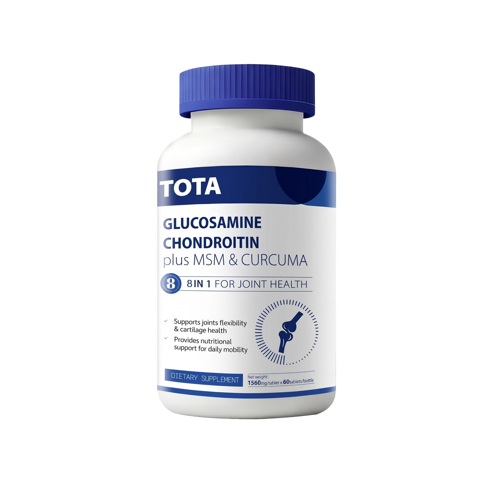
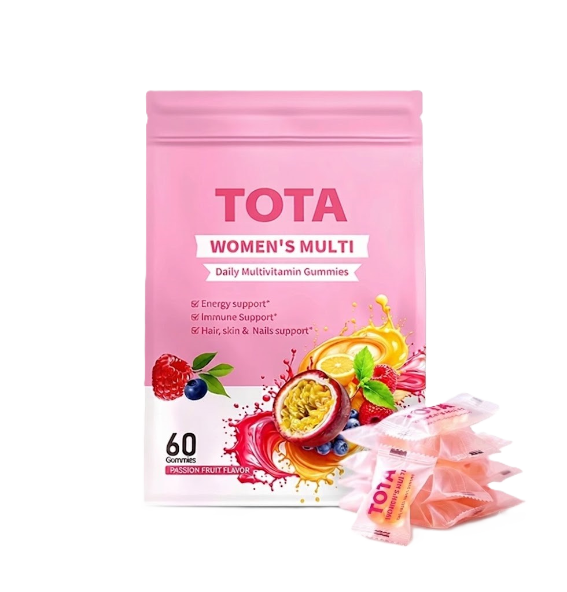

从成分配比到适用人群，TOTA 的每一款产品都经过闭环质控，规格透明可查。From ingredient ratios to intended use, every TOTA product is quality-controlled end to end — with specifications you can check in full.

8大营养因数配方，特别添加姜黄提取物与透明质酸钠，双效强化，为关节提供全面的日常营养支持。An 8-in-1 formula with added turmeric extract and sodium hyaluronate, giving joints comprehensive everyday nutritional support.
| 规格Specification | 60 粒 / 瓶60 capsules per bottle |
| 核心成分Key Ingredients | 氨基葡萄糖硫酸钾盐、MSM、碳酸钙、二型胶原蛋白、透明质酸钠、硫酸软骨素、姜黄提取物、维生素 D3Glucosamine Sulfate KCl, MSM, Calcium Carbonate, Type II Collagen, Sodium Hyaluronate, Chondroitin Sulfate, Turmeric Extract, Vitamin D3 |
| 适用人群Best For | 中老年关节退化人群、健身/登山/跑步等关节负荷较重人群、久坐不动的上班族Those with age-related joint wear, athletes/hikers/runners under heavy joint load, and office workers who sit for long hours |

科学配方，多元营养，21种营养素全方位呵护女性健康，细节处见精致便捷美味。A scientific, multi-nutrient formula with 21 nutrients for everyday women's health — care in every detail, convenient and delicious.
| 规格Specification | 2.5g × 60 粒 / 袋2.5g × 60 gummies per pack |
| 核心成分Key Ingredients | 维生素 C、维生素 E、维生素 B1/B2/B6/B12、维生素 A、维生素 D、钙、镁、锌、铁、叶酸（B9）、生物素（B7）Vitamin C, Vitamin E, Vitamin B1/B2/B6/B12, Vitamin A, Vitamin D, Calcium, Magnesium, Zinc, Iron, Folic Acid (B9), Biotin (B7) |
| 适用人群Best For | 希望获得日常多元营养支持的女性Women looking for everyday multi-nutrient support |
欢迎联系我们，获取更详细的产品信息与合作咨询。Get in touch for detailed product information or partnership inquiries.
联系我们Contact us